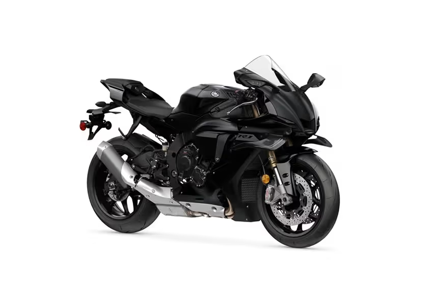

Yamaha YZF-R1
The Yamaha YZF-R1 is the flagship of the R-Series – a superbike engineered with MotoGP DNA. Packed with advanced electronics, race-grade components, and cutting-edge design, the R1 delivers unmatched performance on both road and track. It's built for riders who live for speed, precision, and the thrill of full-throttle control.
Specifications
- Engine displacement: 998 cc
- Power output: approx. 147 kW (200 hp)
- Engine type: 4-cylinder, crossplane crankshaft
- Cooling system: Liquid-cooled
- Transmission: 6-speed with quickshifter
Chassis & Brakes
- Front brake: Dual 320 mm discs with radial calipers
- Rear brake: 220 mm disc
- Front suspension: Fully adjustable USD fork
- Rear suspension: Fully adjustable monoshock
- ABS & cornering ABS: Standard
Dimensions & Weight
- Seat height: 855 mm
- Wet weight: approx. 201 kg
- Fuel tank capacity: 17 liters
Key Features
- MotoGP-inspired crossplane engine
- Full suite of rider aids (TCS, LIF, SCS, Engine Brake Control)
- 6-axis IMU with cornering ABS and slide control
- Aggressive aerodynamic bodywork
- High-end electronics and TFT display
Price: CHF 21,990.–
← Back to overview